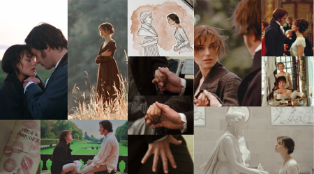

Sinopse
Orgulho e preconceito é o livro mais famoso de Jane Austen e possui uma série de personagens inesquecíveis e um enredo memorável. Austen nos apresenta Elizabeth Bennet como heroína irresistível e seu pretendente aristocrático, o sr. Darcy. Nesse livro, aspectos diferentes são abordados: orgulho encontra preconceito, ascendência social confronta desprezo social, equívocos e julgamentos antecipados conduzem alguns personagens ao sofrimento e ao escândalo. O livro pode ser considerado a obra-prima da escritora, que equilibra comédia com seriedade, observação meticulosa das atitudes humanas e sua ironia refinada. A nova coleção possui capa dura e estilo inspirado nos bullet journals.
Livro
Além de ser uma das mais belas declarações de amor da literatura inglesa (e bastante honesta), Sr. Darcy explica algo que eu mesma senti na primeira vez que li Orgulho e Preconceito, de Jane Austen. Talvez hoje eu saiba o lugar em que me vi profundamente arrebatada por esse romance, mas na primeira vez, certamente, eu já estava no meio quando percebi que havia começado.
Orgulho e Preconceito foi meu começo na literatura inglesa, especialmente da literatura de escritoras como as irmãs Brontë, Elizabeth Gaskell, Katherine Mansfield, Virginia Woolf, dentre outras. Fora tudo o que eu amo nessa história, sou profundamente grata aos livros e autoras que conheci a partir de Jane Austen.
Frequentemente colocado incorretamente na prateleira dos romances de época, Orgulho e Preconceito foi publicado originalmente em 1813 na Inglaterra, que vivia o Período Regencial. Sendo assim, quando nós jainetes torcemos o nariz para esse erro frequente de classificação, não é em menosprezo a autoras como Julia Quinn, Loreta Chase, dentre outras, incluindo escritoras brasileiras. O problema dessa confusão é a possível quebra de expectativa que pode causar em alguns leitores. Isso porque no(s) livro(s) de Austen você não vai encontrar um romance romântico tão açucarado (e picante) quanto os romances de época. Orgulho e Preconceito é um clássico da literatura inglesa, escrito retratando a sociedade e a época em que a autora viveu. Os romances de época são escritos na atualidade, com inspiração em costumes de determinada época e ambientados no passado. Embora muitas autoras façam uma bela pesquisa histórica, nesses romances o foco é o casal e sua jornada romantica. E frequentemente com direito a pelo menos uma cena de sexo. Trocando em miúdos: Orgulho e Preconceito não é “Bridgerton” (embora haja por parte de várias autoras contemporâneas uma óbvia influência e inspiração em Jane Austen. Eu, inclusive, fui fanfiqueira de J. A. neste e neste conto!)
Nada contra “Bridgerton”, que fique claro (inclusive, gosto bastante). Mas são estilos beeeeeeeeem diferentes: Julia Quinn é romance de época. Jane Austen, clássico da literatura inglesa. Leiam com as expectativas corretas em relação a cada estilo/categoria.
Voltando ao assunto…
Orgulho e Preconceito é aquele livro que me faz sorrir logo nas primeiras páginas. Eu sempre releio um trecho ou outro, mas só recentemente, com a publicação da edição (incrivelmente maravilhosa) da Antofágica, decidi relê-lo inteiramente, sem pular nenhuma partezinha. Fiquei surpresa com trechos que havia esquecido ou que guardava apenas o diálogo conforme o filme de 2005, que altera algumas coisas em comparação ao livro. Vieram até algumas memórias da série da BBC (1995), que eu não revejo faz algum tempo. E vontade de assistir versões de outros anos, versões recontadas (minha favorita é Bride and Prejudice, que resenhei aqui) e até alguns filmes que fazem referência ao clássico de Austen. Vocês já entenderam que eu não queria deixar Longbourn por nada nessa vida, certo? A menos que fosse para um baile em Netherfield ou uma visitinha a Pemberley.
Filme
As histórias de Jane Austen costumam ter finais felizes, mas nem por isso deixam de provocar questionamentos e reflexões sobre os valores da sociedade da época.
No caso de Orgulho e Preconceito, a mensagem que fica é a da importância da honestidade com os próprios sentimentos e o amor-próprio.
Mas, além disso, a necessidade em reconhecer quando se faz um mau julgamento do outro e a coragem de mudar de ideia e de se entregar ao amor.